Camino: Derisking Exploration for Young Adults with T1D
How might we help young adults with T1D navigate life transitions by providing lean, context-oriented, and accessible paths to independently manage their condition without sacrificing any life experiences?
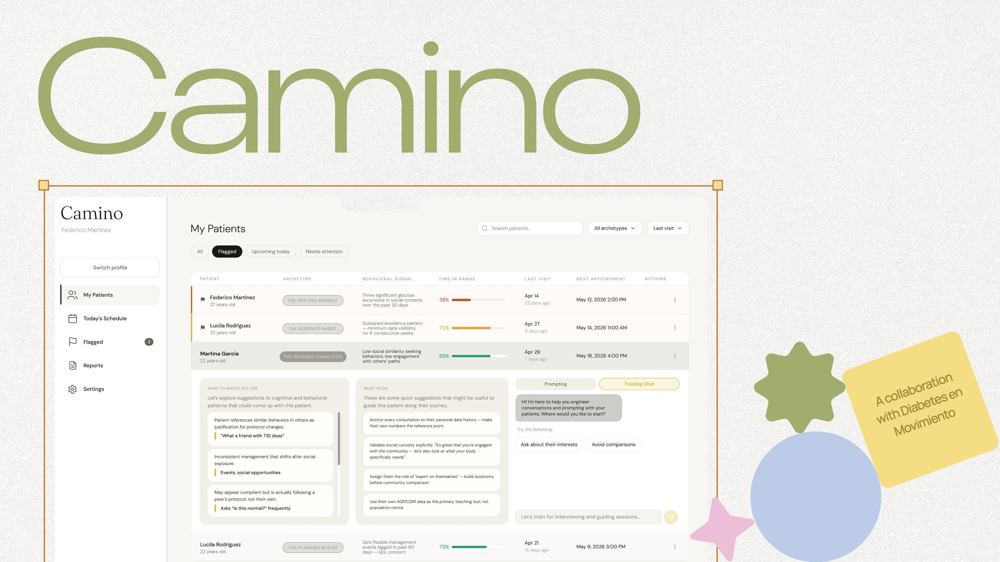
Summary
- Team
-
Shreya Mathur
Mariana Andrade
Arundhuti Bhattacharya - Partner
- Diabetes en Movimiento (DeM)
- My Contribution
- Research, framework synthesis, visual design
- Duration
- 14 weeks, 2025–2026
- Course
- Advanced Behavioral Design Workshop, Institute of Design
- Deliverable
- AI-integrated behavioral tool + dashboard
Objective
Young adults with Type 1 Diabetes (T1D) don't neglect their condition out of carelessness — they're navigating real tradeoffs between medical management and the life experiences they value. We asked: what if safe exploration could be not just possible, but personal?
Approach
Research across six methods surfaced five key insights and eight behavioral dimensions, which we used to map users into seven distinct archetypes.
Outcome
Camino — an AI-integrated tool that maps each individual's behavioral risk profile and delivers tailored strategies for both the user and their healthcare provider.
Young Adults Living with T1D in South & Central America
Behavioral Dimensions in the Risk Framework
User Archetypes Mapped to Distinct Strategies
Context
A Condition That Doesn't Pause for Life
Type 1 Diabetes requires continuous, active management — blood glucose monitoring, insulin dosing, diet adjustments — every hour of every day. For young adults in their late teens and twenties, this management often collides head-on with the demands of life: social events, travel, spontaneous decisions, peer pressure, and the desire to simply belong.
Diabetes en Movimiento (DeM) is a healthcare organization in Latin America that provides mentorship and support to young T1D patients. They came to our team with a challenge: existing tools and systems weren't meeting their users where they actually were.
The context matters: in Latin American communities, social and collective care is the cultural norm. Management isn't just a personal choice — it happens within families, friend groups, and communities. Any solution would need to honor that reality.
160,000 young adults live with T1D in South and Central America. Source: Global type 1 diabetes prevalence, incidence, and mortality estimates 2025.
Problem
Not Neglect — a Tradeoffs Problem
Driven by social acceptance, peer pressure, and independence, young adults deprioritize management during spontaneous moments. But it's not neglect — it's a tradeoffs problem. They're choosing between diabetes care and the life they want to live.
And not everyone starts from the same place. Some have knowledge but lack confidence. Others feel overwhelmed. Some avoid thinking about T1D entirely. Recognizing these differences is the key to effective support.
Behavioral Challenge
How do we help young adults achieve safe exploration — pursuing life fully while managing T1D responsibly — in ways that are attainable and actionable for their specific context?
Research
Research Insights That Shaped Our Way
We combined secondary and primary research to understand the lived experience of young adults with T1D:
- 15 literature review sessions
- 15 digital ethnography sessions
- 5 interviews with transcript analysis
- 5 media scans and company reports
- 2 trend reports and conference proceedings
- 2 data and research analyses
Cognitive Load
Young adults experience cognitive fatigue as a result of the emotional toll associated with continuous decision-making and condition management.
Healthcare Misalignment
There is a misalignment between young patients' needs and the healthcare system, as providers often have little to no contextual knowledge of their patients in this age group.
Collective Care
Family and friends play a crucial, infrastructural role in T1D management for young adults since social, collective care is the inherent norm in Latino communities.
Tech Gap
There is a gap between user-context and existing tech solutions. Young adults lack context-aware, personalized support for their real-life needs and behaviors.
Psychosocial Underservice
Support systems prioritize clinical needs and metrics, while the emotional and psychosocial needs of young T1D patients remain consistently underserved.
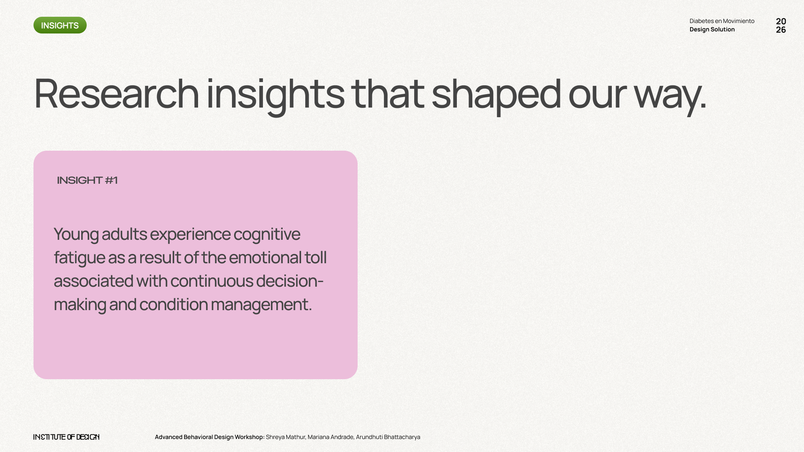
Research insights
Process & Framework
8 Key Behavioral Dimensions
Eight behavioral dimensions emerged from our research — four individual and four social. Each dimension is evaluated on a spectrum from high-risk to low-risk behaviors.
Individual
- Preparing Proactively
- Adapting Culturally
- Setting Boundaries
- Monitoring Mental Health
Social
- Normalizing Disclosure
- Sharing Responsibility
- Fostering Belonging
- Building Knowledge
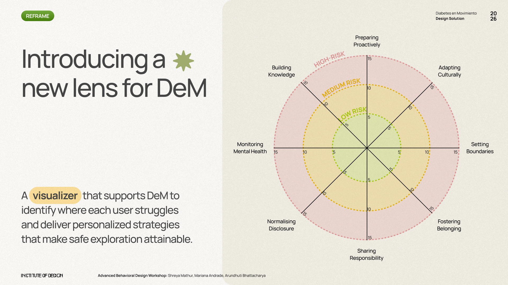
Behavioral spider map — each user mapped across the 8 dimensions
7 User Archetypes
Users are mapped across the 8 dimensions, revealing behavioral patterns — illustrated through distinct archetypes, each driven by a different emotional state.
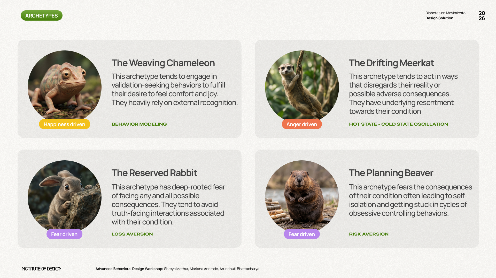
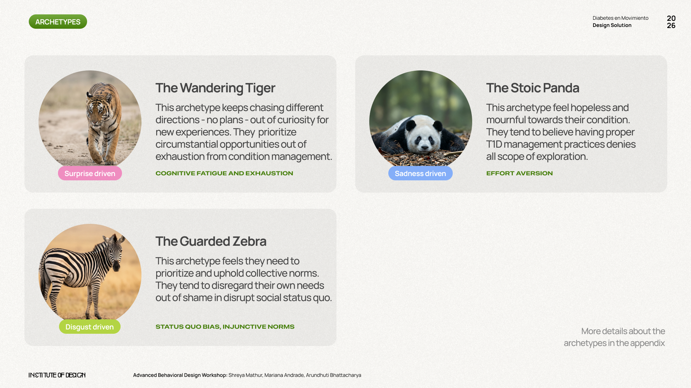
Each archetype maps to specific behavioral biases and intervention strategies — e.g., Behavior Modeling, Loss Aversion, Cognitive Fatigue, Status Quo Bias.
Solution
Introducing Camino
An AI-integrated tool that determines what each individual needs for safe exploration, based on their behavioral spider map and archetype — enabling DeM to provide user-specific strategies tailored to their context. Camino works across two surfaces: a personal report for users, and a clinical dashboard for DeM counselors.
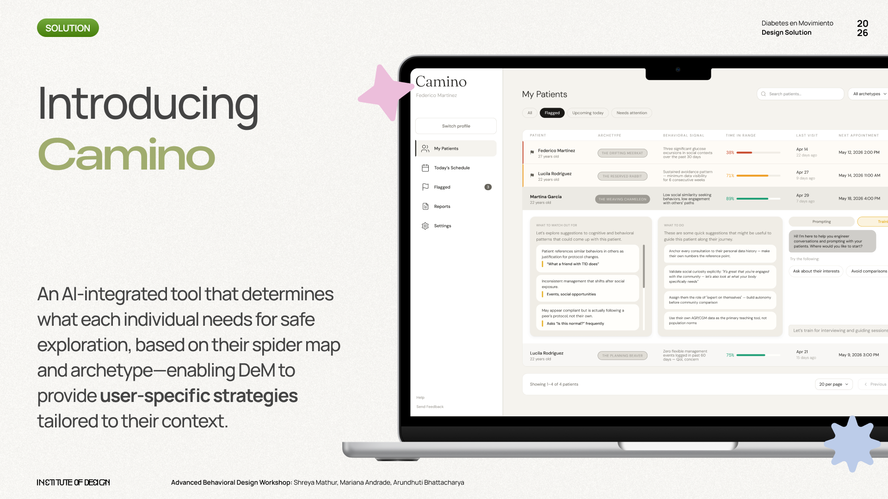
How It Works
-
Fill Questionnaire
-
Visualize Spider Map
-
Reveal Archetype
-
Get Personalized Strategies
User Facing: Personal Report & Playbook
A clear, readable report that tells users who they are, what drives their behavior, and gives them actionable strategies that are specific to their archetype — meeting them where they are emotionally and behaviorally.
DeM Facing: Toolkit & Dashboard
A clinical-grade dashboard that highlights at-risk patients at a glance, surfaces behavioral signals, and provides evidence-based consultation guidance — giving counselors confidence and context they didn't have before.
Martina's Journey — The Weaving Chameleon
Martina defines herself through social comparison and fears T1D makes her "different." Her behavioral archetype — The Weaving Chameleon — is happiness-driven and engages in validation-seeking behaviors, anchoring her management to what works for others rather than what works for her own biology.
Her personalized strategies focus on Behavioral Modeling and Relative Sense of Self: reframing management as compatible with belonging, not opposed to it.
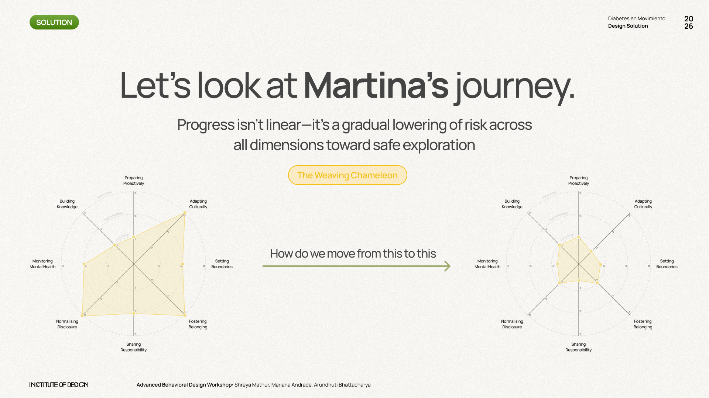
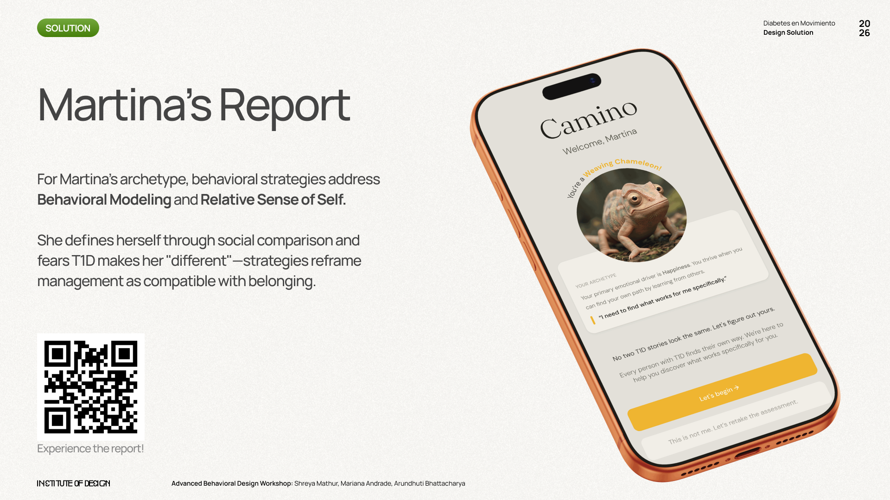
Martina's spider map and her personalized Camino report
5 Strategies for the User-Facing Report
-
Personal Baseline Snapshot
Trend overview
-
Action Lab
Method exposure
-
Progress Tracking
With embedded identity
-
Learning Lab
Testimonials & recommendations
-
Reframing Current Path
Rewarding good behavior
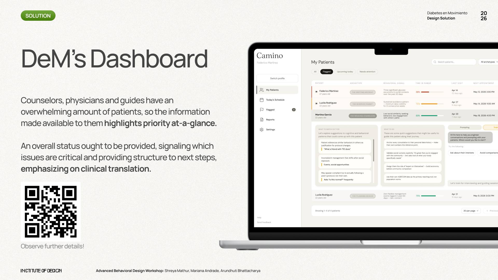
DeM's clinical dashboard
Try the Prototype
Testing
Evaluating the Framework
Testing is essential to evaluate Camino's framework and effectiveness. Three questions guide the next round of validation:
- Do the 8 dimensions feel right to users? Are they comprehensive and resonant with lived experience?
- Do users find their archetypes true to themselves? Does the mapping feel accurate and non-reductive?
- How long does it realistically take to move from high to low-risk across all dimensions?
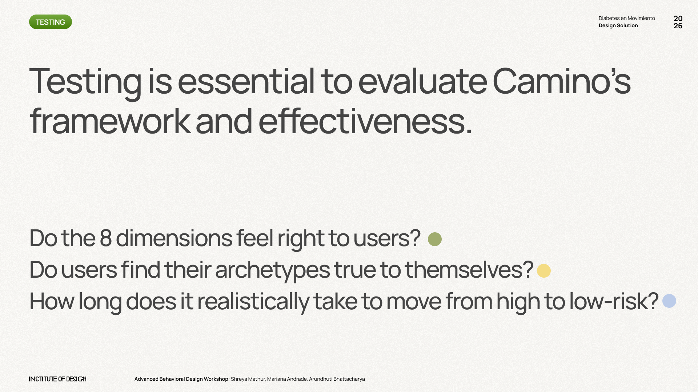
Reflection
Helping Users Carve Their Own Camino
Limiting exploration is not the answer — it catalyses a series of unintended consequences that fail to address the psychosocial components of T1D management. Our solution helps users carve their own Camino.
Behavioral Science as Design Tool
Mapping archetypes to specific behavioral biases (loss aversion, hot-cold state oscillation, effort aversion) gave us a rigorous foundation for generating non-generic interventions. Behavioral science isn't just a research lens — it's a design material.
Context Over Prescription
The biggest insight wasn't about what T1D patients should do — it's that no two journeys look the same. Effective support requires meeting each person at their actual starting point, not an imagined average one.
Designing for Two Users at Once
Camino serves both the patient and the provider. Designing for the counselor-patient relationship — not just the individual user — was one of the more complex and rewarding design challenges in this project.
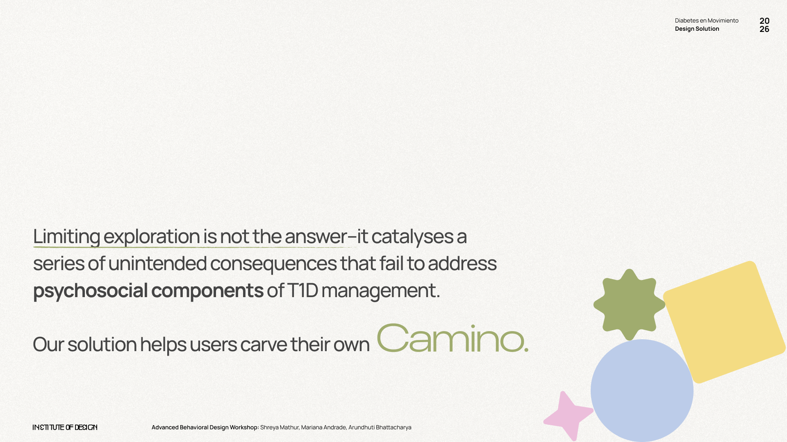